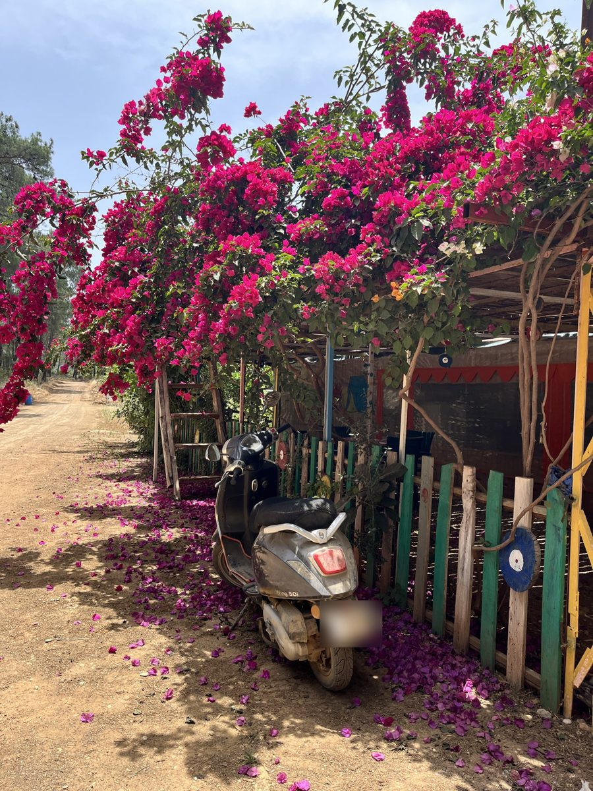
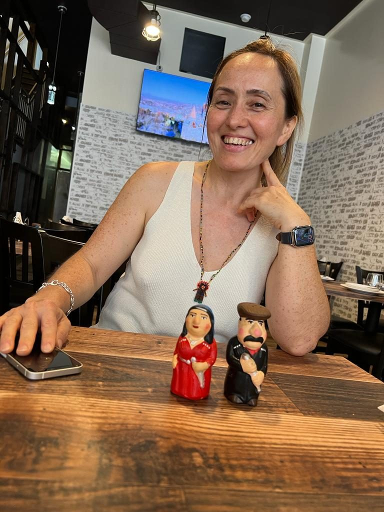
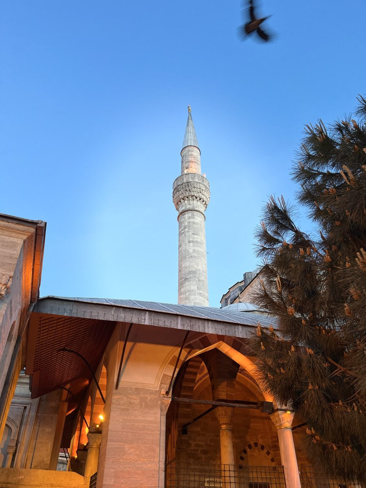

глава из романа «Ветруша» · Френдсгивинг
🏔️ Хребет
Неидеально совпадая,
они идеально тебя дополняют
🥂 Для настроения
Прежде чем начать, дам настроение, сценой из старого фильма, которую я люблю
Брат стоит рядом с сестрой. У неё много детей, муж пьёт и едва зарабатывает, тяжёлая жизнь. Он не читает ей нотаций. Он подшучивает, смешит её прямо посреди всего этого. Они наливают по стаканчику, и он просит её поклясться сыном
«Клянись Варламом»
«А почему мной? — тут же встревает маленький Варлам. — Что, кроме меня, никого нет?»
— «Не горюй!», реж. Георгий Данелия 🍿
Вот юмор, что держит людей вместе: крыша течёт, дети неблагодарны, а ты всё равно наливаешь по стаканчику, смеёшься и клянёшься именем друг друга. Потому что в конце концов и правда никого, кроме друг друга, нет
Эта вещь — о том, что бывает, когда мы это забываем
🕯️ Пролог · Френдсгивинг
Четвёртый четверг ноября. За окном чужие дома полны: длинные столы, слишком много стульев, запах чего-то запечённого. В её доме тихо
Она немного простужена, немного устала. Приготовила на одного: фарш, тыква, перец, капуста, всё вместе потушено в одной сковороде, тёплое, в белой миске на бумажной салфетке. Свеча. Тёмное окно
одна миска,
одна свеча,
много тарелок в мыслях
Эту неделю называют Френдсгивингом, днём, когда собирают тех, кто стал семьёй. Сегодня ей не за какой стол сесть. И она делает единственное, что может: мысленно ставит место для каждой, как расставляют тарелки
Её подруги и две сестры разбросаны по свету: за океанами или на другом побережье этого же континента. Сегодня ни одной из них нет рядом. И всё же, каким-то образом, они все здесь
🍃 Айла, лёгкий ветерок

турецкое солнце, неспешные утра 🌺
В офисе холодно, как бывает холодно в некоторых офисах. Не воздух. Люди
Айла стала первым теплом. Она ни разу не спросила что случилось? Она приходила с двумя чашками чая, рассказывала рецепт, который в её семье готовят неспешным утром, говорила о своём отце, больном и далёком. Она видела иголки, застрявшие внутри Ветруши, все до одной, и не пыталась их вытащить. Она просто оставалась рядом, медленно кружила вокруг, пока холод не начал отступать
«Не жди от людей слишком многого, — сказала как-то Айла, почти мимоходом. — Жить становится легче»
ветерок не толкает 🍃
Айла — лёгкий ветерок. Она не толкает. Она укутывает, как плед, поворачивается к свету в людях и называет его вслух, будто он всегда был очевиден
⛈️ Бесс, погода, на которую можно опереться
«Не горюй!», Георгий Данелия, 1969 · © Мосфильм
Семнадцать лет с Бесс
Если Айла — ветерок, то Бесс — погода, на которую можно опереться. Твёрдая, уверенная в своём, она не гнёт свою линию, чтобы всем было удобно. «Не буду приукрашивать», — любит говорить она. И не приукрашивает
Её советы редко подходили к жизни Ветруши. Ты слишком мягкая. Зачем вообще уходить? Ты слишком быстро бросаешь. Ты — математик? Иди на юридический. Почти ничему из этого Ветруша не могла последовать. Но это всё равно помогало, наоборот: Бесс показывала каждую дорогу, по которой Ветруша никогда бы не пошла, и, отказываясь от неё, Ветруша яснее видела свою
Однажды был разрыв: пропущенный рейс, долгое молчание, слова, попавшие в человека, а не в проблему. На время Ветруша отпустила ту открытую, любящую подругу, какой она была с Бесс, — так тихо закрывают дверь в комнату, которую всё ещё любишь, но сидеть в ней не можешь. Не ненависть. Просто расстояние
не двое согласных,
а двое, кто остался
Но под всем этим Бесс слушала. Каждый раз. Ни разу не отошла от телефона. Вот это и есть дружба: не двое, которые соглашались, а двое, которые остались
🧡 Дана, любовь делом

маленькая оранжевая фигурка, всё ещё со мной 🧡
А ещё есть Дана, с первого дня юрфака: коричневая кофточка, уверенный подбородок, оглядела всю аудиторию и выбрала: сяду с ней
Дана не говорит я скучала. Она говорит надо куда-нибудь съездить — и на её языке это одно и то же. Она знает цену всему и ничего не тратит зря. Её любовь приходит застеленной кроватью, тарелкой мяса, закрытой дверью, чтобы не впускать жару. Однажды на тёмном пляже она сказала: сними, как я иду к океану, ведь это счастье — тянулась, немного неловко, к радости, которую чувствовала, но не умела показать
надо куда-нибудь съездить
= я скучала
Однажды она купила Ветруше бусы с маленькой оранжевой фигуркой. Это ты, для меня, — сказала она. Ветруша не поняла, но всё равно надела. Некоторую любовь не переводят. Её просто надевают
Может быть, Дана чувствует меньше. Но когда в дороге у Ветруши кончились силы и она притихла и посерела, именно Дана обернулась, вдруг тёплая, и донесла её до конца пути
⛰️ Хребет

здесь нет ничего симметричного
Однажды в октябре Ветруша одна поднялась в гору
Наверху не было ничего симметричного. Ни одно дерево не стояло прямо. Река обтекала валун, не боролась с ним, а огибала, и с другой стороны вода звучала громче и светлее благодаря камню
«Реке нужны камни, — сказал Ветер. — Без них у неё не было бы песни»
Тогда она подумала о них. Айла, ветерок, любит слишком мягко, чтобы ранить. Бесс, погода, любит слишком сильно и говорит правду, как камень. Дана, твёрдая земля, любит делом и не умеет сказать это словами. И сёстры за морем, которые тоже любят её каждая в своей тональности. Такие разные. Ни одна не копия другой. Все — часть одного пейзажа
неидеально совпадая,
идеально дополняют ⛰️
Дружба похожа на этот хребет. Шершавая, неровная, вся в поваленных деревьях, которые никто не убрал. Перелезаешь через них. Руки в смоле. Неидеально совпадая, они идеально тебя дополняют
🍵 Снова Френдсгивинг

за океанами
Миска уже пуста. Свеча стала ниже
Она одна, и не одна. Ветерок в одном месте, погода в другом, твёрдая земля в третьем и две сестры за океанами. Женщины, каждая из которых любит её на совсем другом языке, и всё это, как ни странно, одно и то же
Она поднимает чашку чая за пустые стулья, которые не пусты
С Френдсгивингом, — говорит она им
И хотя ни одна из них этого не слышит, Ветер всё равно несёт её слова через расстояние
🥧 День благодарения
тёплый стол · Георгий Данелия · © Мосфильм
Одиннадцать лет в этой стране, и ни разу у неё не было того Дня благодарения, который имеют в виду, произнося это слово. Тёплого. Где ты не гостья, которую представляют, не та, кому выпала смена, не та, о ком говорят в третьем лице за её же столом. Ну, ты же знаешь, какая она
Какие-то годы она стояла за кассой в продуктовом, пока они уезжали без неё. Это хорошо, — сказал он, — заплатят в полуторном размере. Какие-то годы сидела за красивым столом и чувствовала тихую дистанцию вежливой семьи. А какие-то просто работала, училась и снова работала, и праздник проходил, как погода за окном
Однажды один мужчина всё-таки вывел её в то утро. Пойдём, удивлю, — сказал он. Две остановки на метро, полоска деревьев между двумя дорогами, даже не парк. Они гуляли. И где-то по пути выяснилось: ему надо забрать пирог из батата. Для своей семьи. Для стола, за который её не позвали
Вот и вся прогулка. Её вписали в поручение, несли с собой, как несут пирог. Потом он принесёт ей остатки и расскажет, как скучно было без неё. Тот вечер она провела одна, в пижаме, под фильм, который не смотрела, в слезах. Ну, ты же знаешь, какая она, будто говорил о ней мир за каждым столом, кроме её собственного
своё тепло,
свой стол 🕯️
Поэтому в этом году она решила одну маленькую вещь. Перестать ждать, когда её позовут в чужое тепло. Сделать своё. Миска еды, которую она приготовила сама. Свеча. Плед. Одно место за столом, её
Это не тот День благодарения, о котором она мечтала. Пока нет. Но впервые никто за этим столом не даёт ей почувствовать себя пустым стулом. А подруги и сёстры, разбросанные за океанами и на другом побережье, здесь так, как никогда не были здесь люди из тех светлых домов
Вот это и есть Френдсгивинг. А семья, за которую она благодарна, — та, что выбрала её в ответ
🤍 Қорытынды · о дружбе
Дос деген — алыста болса да, жүрегіңнің жылуын сезетін адам.
Ол сені мақтамаса да, қиналғанда қасыңда қалады.
Біреуі — жұмсақ жел, біреуі — қатты дауыл, біреуі — берік жер.
Үшеуі де сүйеді, тек әрқайсысы өз тілінде.
Бүгін — Алғыс айту күні. Мен алыстағы достарым мен әпкелерімді ойлаймын.
Әрқайсысы — жүрегімдегі бір жылы шуақ
🍬 Хочешь конфетку?
«Не горюй!», Георгий Данелия · © Мосфильм
Есть один маленький момент, который она любит, и он каждый раз её смешит. Один друг поворачивается к другому и спрашивает: Хочешь конфетку? Тот расцветает: Конечно! А в ответ, с серьёзным лицом: Нету
— «Не горюй!», режиссёр Георгий Данелия 🍿
Вот и всё. Маленький розыгрыш между друзьями. Никакой конфетки. И почему-то это самое тёплое на свете, потому что дело было вовсе не в конфетке. Дело было в них двоих, вместе
Хочешь конфетку? — Конечно, — отвечает она пустой и непустой комнате. Вот за этот стол она и благодарна
🎬 два фильма о дружбе и горах
«Не горюй!», Георгий Данелия, 1969 · смотреть на канале «Мосфильма» →
«Мимино», Георгий Данелия, 1977 · смотреть на канале «Мосфильма» →
короткие фрагменты для комментария, все права © «Мосфильм» · песня: «How It Ends», DeVotchKa
если откликнулось, оставь сердечко 🤍
можно нажимать сколько хочется
спасибо, записка у меня 🤍